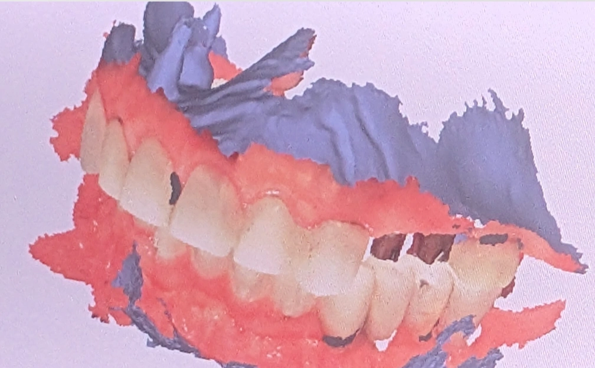

Insight 52 — وقتی حس لامسه، خطای لابراتوار را رد کرد
تاریخ انتشار:
آخرین بازبینی:
English

توضیح بالینی
روکشهای ایمپلنت در تحویل بلند به نظر میرسیدند و ابتدا خطای فرمدهیِ اباتمنت توسط لابراتوار مشکوک شد؛ اما حسِ غیرعادیِ زودهنگام هنگام باز کردنِ اباتمنت نشان داد اباتمنت کاملاً روی هگز ننشسته بود، و همین نشستِ ناقص خودش را بهشکلِ چند خطای مستقلِ ظاهراً لابراتواری نشان داده بود؛ حس لامسه یک هشدارِ زودهنگام است، اما تأییدِ قطعیِ نشست با رادیوگرافیِ پریاپیکالِ صحیح انجام میشود
-
شرح مورد
بیمار برای تحویل روکشهای ایمپلنت مراجعه کرد. در جلسهی قبل روکشها به دلیل نداشتن ثبات باکولینگوال روی اباتمنتها تکرار شده بودند. اینبار اباتمنتها بسته شدند، روکشها امتحان شدند، ثبات کامل بود و لقی وجود نداشت. به نظر میرسید مشکل ثبات در لابراتوار حل شده است. -
مشاهده
روکشها در موقعیت خود خیلی بلند بودند. بعد از تلاش برای اصلاح اکلوژن، ارتفاع همچنان زیاد بود. مارجینال ریجها نسبت به دندانهای مجاور بالاتر بودند. با خارج کردن روکشها مشخص شد یکی از اباتمنتها بهقدری بلند فرم داده شده بود که برای زیرکونیا حدود ۰٫۲ میلیمتر فضا باقی مانده بود.
برداشت اولیه این بود که خطا، در طراحی یا فرمدهیِ اباتمنت توسط لابراتوار است و احتمالاً جلسهی قبل مشکلات دیگر آنقدر زیاد بودند که این مورد توجه نشده بود؛ قرار شد فایل طراحی برای بررسیِ اختلاف مارجینال ریج درخواست شود. -
نکتهی تعیینکننده
هنگام باز کردن اباتمنتها، حس باز شدن مثل همیشه نبود. اباتمنت زودتر از حد انتظار از روی فیکسچر جدا شد. این حس غیرعادی، شک به درگیر نبودن کاملِ هگز را ایجاد کرد. با جایگذاری مجدد و بستن پیچ، اباتمنت بهطور کامل نشست، فضای لازم برای زیرکونیا فراهم شد، روکش در موقعیت درست قرار گرفت و اکلوژن اصلاح شد. -
جمعبندی
مشکل اصلی خطای لابراتوار نبود. اباتمنت بهطور کامل روی هگز ننشسته بود و مختصری نابهجا بود و همین باعث شده بود بلندتر باشد. این ارتفاع اضافه هم روکش و هم اباتمنت را بلند نشان داد. حتی اختلاف مارجینال ریج با دندان مجاور هم میتوانست پیامد همین جابهجاییِ اکلوزالی باشد، نه لزوماً خطای طراحی. یعنی یک خطای جزئی در نشستن، خودش را بهشکل چند خطای مستقل و ظاهراً مربوط به لابراتوار نشان داده بود. -
درس بالینی
حس لامسه هنگام بستن و باز کردن اباتمنت یا اسکنبادی، و تعداد دور پیچ تا نشستن کامل، یک نشانهی زودهنگام برای درست یا نادرست بودنِ نشستن قطعه است. جدا شدن زودهنگام یا مقاومت غیرعادی باید به نشستن ناقصِ هگز مشکوک کند. با این حال این حس یک هشدار است، نه تأیید نهایی. تأیید قطعیِ نشستن کاملِ اباتمنت روی پلتفرم فیکسچر با رادیوگرافی (پریاپیکال با زاویهی صحیح) انجام میشود که نبودِ فاصله در محل اتصال را نشان میدهد. نشستن ناقص علاوه بر تغییر ارتفاع، خطر میکروگپ، لقیِ پیچ و بارِ غیرطبیعی روی مجموعه را هم به همراه دارد.
محتوای این صفحه برای استفادهٔ آموزشی دندانپزشکان و دانشجویان دندانپزشکی تهیه شده است.